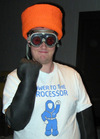
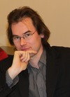
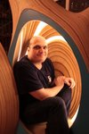
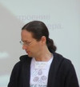
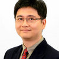
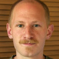

EHSM is entirely supported by its attendees and donors. To help us make this
event happen, please donate and/or order your ticket as soon as possible.
EHSM is a non-profit event and most of the money will be used to cover
speakers' travel expenses.
To give you an idea of what is coming up, we are pleased to announce
that the following speakers will be presenting their awesome work:
 |
Keynote Speech: "I built myself a nuclear fusion reactor when I was 16"Will Jack is a 17 year old high school student from the US who enjoys nothing more than building nuclear fusion reactors in his basement. He will present his work on the Inertial Electrostatic Confinement (IEC) fusion reactors that he has built, speaking not only about the theory behind them, but how he developed them, his current work, and his goals for the future as well.
This keynote speech is not about cloud computing. |
|  | Epoxy to schematic: leaving the cubicle and entering the lab by John McMaster: siliconpr0n.org hosts a wealth of information on integrated circuit (IC) reverse engineering (RE) techniques as well as specific chip info. This talk explores the site's resources by going through the process of removing an IC from a circuit board to creating a schematic. While most hardware RE talks focus on results from analyzing a specific system, this instead focuses on techniques to enable others to learn more about the art. |
|  | Wire characterization from one single electrical connection by Adrien Lelong: Wire diagnosis aims at detect and locate faults in wires, measure their length, check their health or simply characterize them. This can be achieved electrically with only one connection point to the wire using reflectometry methods. This involves various hardware platforms and signal processing sometimes similar to those used in radar systems. The measurement platform can either be made around a microcontroller or an FPGA and needs one analog high frequency input/output. Adrien has worked on these issues in the context of real time cable monitoring in vehicles. He will talk about main parts of a reflectometry system for wires and its principle. Demos will be performed during the talk. |
 | The AlphaSphere and Open Innovation by Kaspar Emanuel: The AlphaSphere is a visually striking, spherical and tactile interface for music performance and production developed by nu desine. After a short demo and run through of the features and the technology behind it, Kaspar will present the common sense approach to open innovation adopted for its development. The talk will include the considerations, benefits and pitfalls of this approach as well as glimpses of the story of a young start-up formed around bringing a hardware product to market. |
 | DIY Vacuum Engineering @ Electrolab by Sylvain Radix and David Rochelet: The purpose of this project is to build a high-end vacuum system as a base for various purpose like thin film deposition (thermal evaporation, CVD, PeCVD, MoCVD, ...), plasma etching, linear particle accelerator, electron beam microscope, electron beam welding, molecular beam epitaxy, ... The talk will briefly present the Electrolab hackerspace and all the fancy equipment we have to work on our projects. We will then present the vacuum chamber we are building from scratch using raw materials and a few hacked devices. We will describe the process used to build our own high vacuum flanges, the required skills needed to complete this project and the main difficulties we have been experiencing this year. To illustrate this talk, we will give some examples of particular technology needed for this project such as stainless steel machining, TIG welding or electro
polishing which is quite more complicated than expected. Through our successes and our failures, you will discover the story of this quite unique home-made vacuum chamber. |
|  | Yann Guidon and Laura Bécognée will present and demonstrate the YASEP. Imagine the Arduino project where you can code and debug your application in your web browser without Java, but you can also configure and tweak the CPU, a homebrew 16/32 bits free architecture... |
 | (To be confirmed) Priya has loved electronics since a young age. She now works with Arduino and is involved largely in building their India office, at the same time popularizing this open source project among kids, students and hobbyists alike. She is taking a 4 hour interesting and interactive workshop based on Arduino for kids and beginners of all ages. With the workshop, you would be learning how sensors and software interact to bring your creativity to life. Minors (-18) get into EHSM for free. |
 | Software Defined Radio with DVB-T USB Devices and Aircraft Transponder Reception by Stefan Sydow and Sebastian Koch: The talk will explain some basic concepts regarding Software Defined Radio and illustrate them with examples like AM and FM reception. As special application ADS-B (aircraft transponder) reception will be presented. Depending on the available time and the interest of the audience we will go into the depth of ADS-B decoding and the history of aircraft radio transponders. The authors host Metafly which makes heavy use of SDR for transponder decoding. |
| Touch your NetBSD by Pierre Pronchery: Earlier this year, the AFUL, a French non-profit organization ran a contest called AFULTab, challenging developers to propose a FOSS tablet environment with the hardware of their choice. NetBSD enthusiast and DeforaOS developer Pierre Pronchery prepared and submitted his own proposal on May 1st, co-winning the contest while also becoming an official NetBSD developer in the process. This talk will summarize the work done, the status and the potential future of NetBSD and the DeforaOS desktop environment on such tablet hardware. |
|  | Dmitriy Kostiuk, associate professor at the Computers & Systems department of Brest State Technical University (Belarus) and co-organizer of the Linux Vacation Eastern Europe will present the evolution of the mobile OS interfaces in a free/libre software context. The presentation is dedicated to the history of the mobile devices' GUI, from the earliest PDA concepts to modern touch-oriented smartphones and tablets. Special attention is paid to open source and FLOSS-based mobile OS and shells, along with the increase of free/libre software usage in this segment. |
 |
 | Daniela Schiffer and Markus Schulz will present their startup Changers, the solar charger they have developed and the vision behind what they are doing. Imagine what would happen if every single one of us could produce their own energy and by that creating a currency. Even though Changers' particular business model is not compatible with open source, their story is an inspiring example of how persistence and willingness to leave the beaten path can lead to the successful design and production of consumer electronics in a startup environment. |
 | Anyone can learn to solder and make cool things with electronics! Mitch Altman has taught over 40,000 people to solder, and will be teaching kids of all ages this useful and fun skill at EHSM. Mitch makes it easy, enjoyable, and inspiring to learn! Everyone will be making one "pixel" of an interactive multi-colored blinky-light art project called Trippy RGB Waves, which is an open source kit designed specifically for people who've never made anything at all to be able to complete successfully. Each "pixel" is cool by itself, but put a bunch together, wave your hand over them, and watch trippy and beautiful waves of colors! And afterwards, you can take your colored blinky-light "pixel" home with you to show off to your friends. Fun for all ages. Minors (-18) get into EHSM for free, kits cost 10€. |
 | Harald Welte will present the Osmocom project he founded. In particular, there will be OsmocomBB, a free software GSM stack evolved enough to actually make phone calls and send SMS (plus all the possible explorations of the GSM system), and OsmoSDR, a small-size, low-cost software defined radio device. |
 | Last year, CERN launched a new open hardware license. Evangelia Gousiou will tell you about this endeavour which was created to govern the use, copying, modification and distribution of hardware design documentation and the manufacture and distribution of products in the spirit of knowledge and technology dissemination.
For the more technically-minded, she will also present the White Rabbit, an open hardware and software Ethernet-based system to synchronize ~1000 nodes with sub-nanosecond accuracy over fiber and copper lengths of up to 10 km. |
| Nadania Idriss is a California transplant who founded Berlin Glas e.V. in 2009. The studio is the first in Berlin to offer hot glass for artists and the general public. Check out her short presentation to learn how you too can work with this material! (glass blowing etc.) |
 | Jasper Nance will present her Microsecond High Speed Photography and Scanning Electron Microscope projects from the perspective of using community resources, specifically those from Heatsync Labs, Arizona's first hackerspace. This includes materials, people, expertise, and crowdsourcing to scrounge and hack together technologically challenging endeavours. The projects are not an end in themselves, but rather serve as hackable platforms for both community and educational outreach to teach skills and develop new and hackable ways of doing difficult and expensive tasks.
For a quick glimpse at Jasper's projects, be sure to check her impressive photo portfolio. |
 | An anonymous woman who goes by the handle of "bionerd23" will give you a very comprehensive, bottom-up view of man-made and natural nuclear radiation and how you can detect it. Mind you - when we say "comprehensive", this means things like building yourself ion chambers for detecting radiation, and studying and operating a small-scale homemade fusion reactor. Have a look at her excellent videos.
She will also give a workshop on how to hack a peanut can into a simple radiation detector. Easy and suitable for kids, material costs 5€. |
 | Jeffrey Gough will talk about and demonstrate metalwork techniques. How to go beyond extruded ABS coming from a 3D printer? There might even be a hands-on workshop coming up, stay tuned. |
|  | Shawn Tan: DIY microprocessor design. Microprocessor companies have teams of engineers working on microprocessor designs. However, if you are an individual who wants to design and experiment with your own microprocessor, you can. This talk will introduce general microprocessor architecture design and some specific techniques with examples from an actual microprocessor core implementation. The focus will be on how an individual can go from a conceptual microprocessor to a real implementation in about a week. |
|  | Ben Krasnow, "Hacker Extraordinaire" at video game company Valve, built an X-ray backscatter imaging system from parts found on eBay. This system works by scanning a very thin beam of X-rays across the target, and measures the amount of backscatter for a given beam position. The beam is scanned mechanically by a rotating chopper (collimator) wheel, and by tilting the rotating wheel on an orthogonal axis. The output image is generated on an oscilloscope by matching the horizontal scan speed to the rotating wheel, and using a potentiometer to measure the vertical axis position. The scope's brightness (z axis) is controlled by the amount of backscatter signal received by a large-area detector. Thus, the image is constructed bit by bit. I used a long-exposure shutter on my camera to see the image formed by the moving oscilloscope trace.
He might also talk about Raman spectroscopy and other hacks, stay tuned. |
 Some electronics books from the 50s claimed making triode tubes would be
an impossible endeavour for amateurs. Today, there are at least two DIY
laboratories making not only triodes but also all sorts of vacuum
electron devices.
Some electronics books from the 50s claimed making triode tubes would be
an impossible endeavour for amateurs. Today, there are at least two DIY
laboratories making not only triodes but also all sorts of vacuum
electron devices.{kind=link}